🔥 Neposlouchá vás váš pes?
Objevte vědecky podloženou metodu — vysvětlenou pro běžné majitele psů — jak naučit „nezvladatelného" psa znovu poslouchat, bez křiku, bez boje a bez nedorozumění. Naučte se mluvit se svým psem v jeho přirozeném jazyce!
Pokud jste unaveni ze života se psem, kterému nerozumíte a který neposlouchá — z každodenní frustrace během procházek, pocitů viny, protože se bojíte, že děláte něco špatně, nebo chaosu, který vyčerpává vaši rodinu — pak vám tato kniha dá nástroje, znalosti a především klid, po kterém už tak dlouho toužíte.
Ano, chci koupit tento speciální balíček →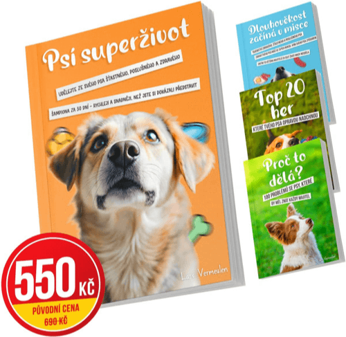
Tato kniha je pro VÁS, pokud...
Váš pes tahá tak silně, že vás bolí svaly na rukou.
Každá procházka je jako boj. Vracíte se domů vyčerpaní místo uvolnění.
Váš pes je štěkací stroj, který prostě nepřestane.
Každý poštovní doručovatel, kolemjdoucí nebo pes v dálce způsobí rámus. Sousedé si už začínají stěžovat.
Váš pes divoce skáče na návštěvy a vaše matka se už bojí přijít.
Stydíte se za jeho chování a cítíte pohledy rodiny a přátel.
Doma poslouchá skvěle, ale venku je všechno zapomenuto.
Jakmile vyjdete ze dveří, zdá se být jako jiný pes. Celý ten trénink vypadá zbytečně.
Připadáte si jako špatný páníček, i když se tak snažíte.
Milujete svého psa, ale někdy jste tak frustrovaní, že se cítíte provinile.
Už jste vyzkoušeli všechno možné, ale nic opravdu nefunguje.
Kurzy, tipy z YouTube, drahé postroje. A přesto je situace stále stejná.
Doma vládne chaos: rozbité věci, žebrání u stolu, ani chvíle klidu.
Sníte o klidném psu, který prostě leží vedle vás na gauči.
Někdy jste si pomysleli: “Zvládnu to vůbec?”
Myšlenka na předání psa vás ničí. Ale někdy prostě nevíte, co dál.
Pokud máte pocit, že jste špatný páníček a že jste výchovu svého psa měli zvládnout lépe – pak dostáváte druhou šanci. Zde je 8 důvodů, proč tato kniha může změnit váš život a ukončit frustraci, stud a každodenní chaos.
Konečně si zase užijete procházku se svým psem — bez tahání, bez bolestí rukou a bez toho vyčerpání, kdy se sotva dostanete kolem bloku. Tady začíná nový způsob procházek.
Získáte kompletní systém k řešení štěkání, skákání a chaosu doma. I když si myslíte: “Už jsem vyzkoušel všechno.” Přesně proto byla tato kniha napsána.
Přestanete se cítit jako špatný páníček. Tato kniha je napsána běžným jazykem – žádný odborný žargon, žádné složité teorie. Jen jasné vysvětlení, které můžete hned použít. Konečně kniha, které opravdu rozumíte.
Získáte jeden jasný plán místo stovky protichůdných tipů. Žádná matoucí videa z YouTube ani zastaralé metody dominance. Pouze jasné kroky, které fungují – i když se váš pes zdá být “tvrdohlavý”.
Váš pes bude poslouchat nejen doma, ale i venku. Jakmile vyjdete ze dveří, chová se jako úplně jiný pes? Psí superživot vás naučí, jak převést trénink do skutečného světa – na ulici, v parku, všude.
Obdržíte 3 cenné bonusové e-knihy (celková hodnota: 1 650 Kč), které nikde jinde nekoupíte: “Dlouhověkost začíná v misce” – objevte, jak výživa ovlivňuje chování a zdraví vašeho psa. “Proč to dělá? – 100 problémů se psy” – konečně pochopíte, proč váš pes dělá to, co dělá. “Top 20 her, které vašeho psa opravdu nadchnou” – naučte se hry, které psa mentálně vyčerpají, aby byl doma v klidu. Všechny tři zdarma k vaší objednávce.
Získáte systém, který dokáže dodržovat celá rodina. Už žádné hádky o tom, kdo je příliš přísný nebo příliš měkký. Jeden přístup, jasný pro všechny – i pro vašeho partnera a děti.
Konečně vybudujete vztah, o kterém jste vždy snili: opravdové kamarádství. Ne pána a psa, ale dva parťáky, kteří si rozumí. Spokojený pes, spokojený páníček – o to jde.
Poštovné hradíme za vás – úplně zdarma. Vy zaplatíte pouze 550 Kč za kompletní balíček: knihu + 3 e-knihy (původní cena 690 Kč). Žádné skryté poplatky, žádná překvapení.
Rozšířená 30denní záruka vrácení peněz – ne standardních 14 dní, ale celý měsíc na to, abyste zjistili, zda to pro vás funguje. Nevidíte zlepšení? Každá koruna zpět, bez otázek, bez komplikací.
Konečně získáte klid – doma i venku. Méně stresu, méně studu, méně omluv. A více hrdosti, harmonie a skutečného spojení s vaším psem. Toto není kniha – je to kompletní vzdělávací program pro majitele psů, za cenu večeře v restauraci.
📖 Objednejte si “Psí superživot” se všemi bonusy zdarma 🎁 za výhodných 550 Kč místo 690 Kč — a začněte novou kapitolu se svým psem 🐕
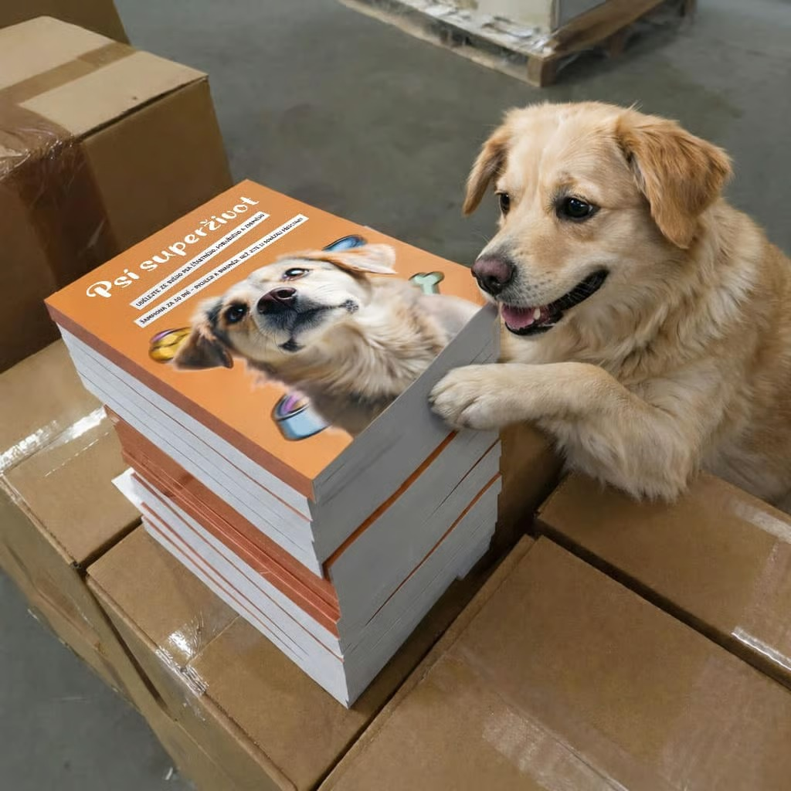
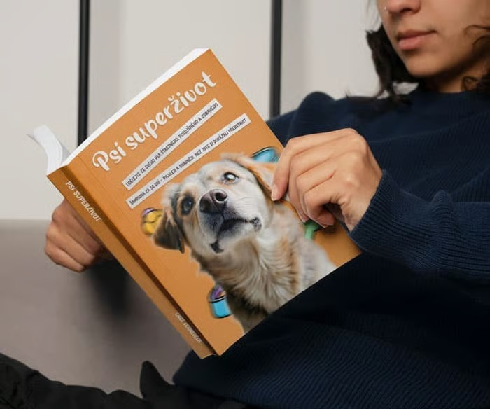
Tato kniha může být přesně to, co vám ve výchově vašeho psa dosud chybělo 🐕
Možná jste už toho tolik vyzkoušeli. Kurzy, kde kázali “dominanci”, ale váš pes se jen více bál nebo se stal tvrdohlavějším. Tipy z YouTube, které si protiřečily a v praxi nic nezměnily. Trenéři, kteří říkali, že musíte být přísnější – zatímco jste cítili, že to není správné. A přesto jste tady – protože uvnitř víte, že musí existovat jiná cesta.
📘 Psí superživot je průvodce, jaký tu v češtině dosud chyběl — překládá psí psychologii do praxe — napsaný pro běžné majitele, ne pro experty. Žádný odborný žargon, žádné složité teorie. Jen jasný jazyk, kterému hned porozumíte. Konečně se naučíte, proč váš pes dělá to, co dělá. A ještě důležitější: jak s ním komunikovat způsobem, kterému přirozeně rozumí.
⚡ Toto je důvod, proč u vás tradiční metody nefungovaly:
- Ignorovaly, jak psí mozek opravdu funguje — a nutily vašeho psa k poslušnosti místo spolupráce
- Řešily pouze příznaky (štěkání, tahání, skákání), aniž by se zabývaly základní příčinou
- Dávaly vám jednotlivé tipy bez uceleného systému — kvůli čemuž byl váš pes zmatený a vy frustrovaní
- Fungovaly pouze na cvičišti – ale venku na ulici bylo všechno zapomenuto
✅ Psí superživot to řeší zásadně jinak. Na základě nejnovějších poznatků se naučíte:
- Rozumět jazyku svého psa — abyste věděli, co se vám snaží říct, dříve než problém eskaluje
- 4-pilířový systém — procházky, domácí pravidla, mentální stimulace & výživa v jednom uceleném celku
- Jak převést trénink do skutečného světa — aby váš pes poslouchal i venku, nejen doma
💛 A to stále není všechno, co dnes získáte:
- Psí superživot (270+ stran) — kompletní systém pro klidného a poslušného psa
- Bonusová e-kniha #1: “Dlouhověkost začíná v misce” (hodnota: 550 Kč)
- Bonusová e-kniha #2: “Proč to dělá? – 100 problémů se psy” (hodnota: 550 Kč)
- Bonusová e-kniha #3: “Top 20 her, které vašeho psa opravdu unaví” (hodnota: 550 Kč)
- Doprava zdarma — poštovné hradíme za vás (v hodnotě 150 Kč)
- 30denní záruka vrácení peněz — žádné riziko, každá koruna zpět
Celková hodnota tohoto balíčku: 690 Kč
Dnes pouze za: 550 Kč
Ušetříte více než 20 %
🐾 Přestaňte pracovat proti svému psovi — začněte s ním spolupracovat. Skuteční parťáci, kteří si rozumí. Šťastný pes, šťastný páníček.

Rozšířená záruka vrácení peněz
30denní záruka vrácení peněz – nejste spokojeni? Každá koruna zpět, bez otázek.
📖 Přečtěte si ukázku z knihy Psí superživot. Založeno na psí psychologii, přeloženo do praktických kroků, které může použít každý majitel 🐕
Pokud jste unavení z neustálého boje se svým vlastním psem…
Pokud večer sedíte na gauči a přemýšlíte, co jste udělali špatně, proč stále ještě neposlouchá…
Pokud stále doufáte, že se to samo zlepší, že z toho možná vyroste – ale každá procházka působí jako stále stejný boj a nic se nemění…
Pak je tohle ta nejdůležitější kniha, kterou kdy otevřete.
A tady je důvod:
Myšlenky mi neustále vířily hlavou – jako nekonečná smyčka, která nikdy nepřestane.
“Měl/a jsem ho od začátku vychovávat jinak?”
“Možná prostě nejsem dobrý páníček.”
“Je to všechno moje vina, že je takový.”
Každý den byl jako opakující se scénář – stres před procházkou, stud před sousedy, zase to tahání na vodítku. A doma?
Chaos. Žádný klid. Žádná radost.
Představoval/a jsem si mnohem víc od života se psem. Příjemné procházky. Parťáka, který kráčí vedle mě. Hrdost místo studu. Zkoušel/a jsem všechno: kurzy, trenéry, videa z YouTube, drahé postroje, nekonečné rady od přátel…
Ale nic neřešilo skutečný problém. Nic nefungovalo. Jen další den… stejná frustrace… stejné pohledy sousedů.
“Proč doma poslouchá a venku ne?”
“Co dělám špatně?”
“Proč to ostatním jde?”
Cítil/a jsem, že ztrácím radost ze svého psa.
A začal/a jsem pochybovat, zda budeme někdy mít ten klidný, šťastný společný život.
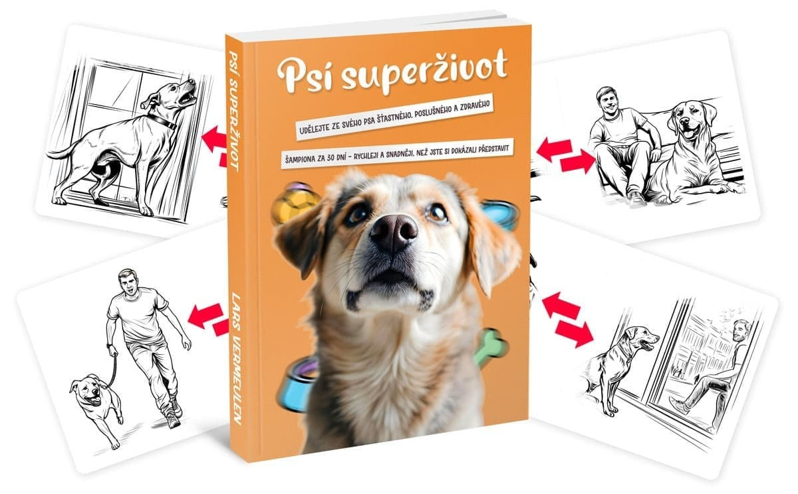
Každý den bez této knihy je další den uvízlý ve stejném chaosu.
Kolik procházek jste už promarnili taháním, stresem a frustrací – “Proč zase neposlouchá…”
Kolikrát jste si přáli, aby ten boj konečně skončil?
Aby to konečně bylo klidné – doma i na ulici?
Každá minuta bez správného přístupu vás stojí víc stresu, studu a zničených věcí, než si zasloužíte.
A každý den, kdy to odkládáte, je den, kdy oba zůstáváte uvízlí ve stejném trápení.
Jednoho dne jsem si řekl: “Dost!”
Měl jsem dost toho přežívat každou procházku místo toho, abych si ji užíval. To tahání, to štěkání, ten stud před sousedy…
Začal jsem hledat odpovědi – a přesně to mě přivedlo k poznatkům, které nezměnily jen můj vztah s mým psem, ale i vztahy stovek dalších majitelů.
Díky těmto principům jsem přestal být vystresovaným, nejistým páníčkem, který neustále pochyboval.
A místo každodenního boje jsem konečně našel klid a spojení, po kterém jsem tak dlouho toužil. Co se pak stalo?
Lidé kolem mě si začali všímat změny.
Ptali se:
“Jak jsi to se svým psem dokázal?”
A tak jsem začal sdílet, co opravdu funguje. Žádné teorie. Žádná prázdná slova. Ale to, co pomáhá ve skutečných situacích – na ulici, doma, s návštěvami, s jinými psy.
Výsledkem je tato kniha. Kniha, která není jen o poslušnosti, ale o skutečném spojení s vaším psem.
O porozumění. A o společném užívání si místo boje. Nezáleží na tom, zda váš pes tahá, štěká, skáče nebo “prostě neposlouchá” – tento přístup funguje pro každou situaci.
Tato kniha vám ukáže cestu ke klidu s vaším psem.
Vaším tempem.
Bez tvrdých metod.
Bez nátlaku.
Bez studu.
A víte co?
Nejsem jediný, komu to pomohlo.
Příběhy, které mluví za vše. Lidé, kteří roky bojovali se svým psem, začali najednou zase uvolněně chodit na procházky.
Ti, kteří se topili ve studu a pocitu viny, se poprvé zase podívali s hrdostí na svého psa.
A ti, kteří se cítili naprosto beznadějně, našli cestu zpět ke šťastnému životu se svým psem.
A pozor – tento přístup funguje tak dobře, protože jde přímo ke kořenu problému.
Od nekonečného tahání po nepřetržité štěkání. Od chaosu doma po stud před sousedy.
Od “prostě neposlouchá” po zoufalství. Každý krok v této knize je pečlivě promyšlený, aby vedl ke skutečné změně – ne jen pár tipů na pár dní.
A výsledky?
Přesně to, po čem všichni toužíme: klid, harmonie a pocit, že konečně můžete být hrdí – na svého psa, na sebe a na váš společný život.
Pomohl mladé ženě se “štěkacím strojem”, která si myslela, že se sousedům už nikdy nepodívá do očí. Díky přístupu z knihy její pes přestal neustále štěkat – a ona se zase odvážila prostě otevřít dveře.
Pomohl muži, který roky trpěl pocitem viny, protože svého psa “špatně vychoval”. Díky jednoduchým krokům z knihy mohl poprvé chodit na procházky bez stresu – a přestal se za svého psa stydět.
Podpořil matku, jejíž pes skákal na návštěvy – její vlastní matka se bála přijít. Díky přístupu z knihy skončil chaos u dveří – a rodina zase začala chodit na návštěvu.
Pomohl někomu s reaktivním psem, který se vrhal na každého jiného psa, kvůli čemuž byla každá procházka noční můrou. Ta osoba se konečně naučila, jak svého psa zklidnit – a hlavně: zase si užívat procházky.
A změnil život ženy, která roky uvažovala, zda svého psa nemá předat. Stále si říkala: “možná prostě nejsem dobrý páníček.” Dnes je na svého psa hrdá. A na sebe taky.
A víte co?
Mohl bych o tom napsat samostatnou knihu – jen o příbězích majitelů, jejichž život se psem se díky tomuto přístupu kompletně změnil.
Protože jsem tyto metody sdílel s lidmi všech věkových kategorií, se všemi druhy psů a s nejrůznějšími problémy. Od těch, kteří právě dostali štěně…
Až po ty, kteří se 10 let potýkali se stejnými problémy. Od lidí s reaktivními psy, kteří se báli každé procházky…
Po ty, kteří úplně ztratili radost ze svého psa. A výsledek? Klid, který si ani nedokázali představit.
Tiché večery na místě, kde celý život vládl chaos.
Procházka bez stresu. A prostor – pro skutečné chvíle štěstí s jejich psem.
Někteří “odborníci” se mě dokonce ptali:
Funguje to opravdu?
Není to trochu příliš jednoduché?
No…
K tomu se vrátíme za chvíli. Ale nejdřív – podívejme se na další důkazy, že tato cesta opravdu funguje. 🐕✨
🐕 Majitelé po celé České republice našli klid se svým psem – začínali stejně jako vy: unavení z boje, ale připravení na změnu ✨
Jako by někdo mávl kouzelným proutkem…
Čím více jsem pracoval s majiteli, kteří byli zoufalí, frustrovaní nebo vyčerpaní, tím jasnější to bylo: tento přístup funguje u všech psů.
U psů, kteří neustále tahají na vodítku.
U psů, kteří štěkají na celé okolí.
U psů, kteří skáčou na návštěvy.
U psů, kteří doma všechno ničí.
A u psů, kteří venku reagují na všechno a všechny.
Cítil jsem, že tento přístup je jiný – ale zpočátku jsem přesně nevěděl proč. Tak jsem šel hlouběji. Začal jsem vidět vzorce.
Opakující se chyby, špatné návyky, které se stále znovu opakovaly u majitele i psa.
Testoval jsem. Pozoroval. Přemýšlel. A krok za krokem jsem vybudoval systém, který neřeší jen příznaky, ale příčinu. A výsledky?
Majitelé, kteří si mysleli, že se jejich pes nikdy nezmění, viděli najednou skutečný pokrok.
Ti, kteří věřili, že “můj pes je prostě takový”, začali znovu mít ze svého psa radost.
A kdo se cítil naprosto beznadějně, našel zpět svou důvěru.
Od té doby jsem tento systém aplikoval na téměř všechny problémy, se kterými se majitelé nejčastěji potýkají:
Tahání na vodítku: Naučte se, jak z každé procházky udělat uvolněný okamžik – bez bolestí rukou, bez škubání, bez stresu. Místo toho si zase začnete užívat společný čas venku.
Nekonečné štěkání: Získáte nástroje, jak řešit štěkání u kořene – ne křikem nebo tresty, ale pochopením, proč váš pes štěká a jak ho uklidnit.
Chaos při návštěvách: Naučte se, jak vytvořit klid u dveří, i když váš pes teď ještě jako blázen skáče na každého. Zjistíte, že přijímat návštěvy může být zase příjemné.
Destruktivní chování doma: Přestanete přicházet domů ke zničeným věcem a naučíte se, jak zajistit, aby byl váš pes klidný – i když jste pryč. Váš domov se znovu stane místem klidu, ne bojištěm.
Reaktivní chování venku: Objevte, jak zvládat psa, který reaguje na jiné psy nebo lidi – bez strachu, bez studu a bez vyhýbání se procházkám.
Neposlouchání / “hluchota”: Zjistěte, proč váš pes doma poslouchá a venku ne – a jak to definitivně změnit. Ne jen “křičet hlasitěji”, ale skutečně navázat kontakt se svým psem.
A funguje to v každé situaci, kdy bojujete se psem, který vás denně vyčerpává.
Tento systém můžete aplikovat ve svém vlastním životě – a konečně začít užívat si klid, harmonii a důvěru, že to zvládnete.
Tohle není teorie. A nejsou to ani prázdné rady z internetu.
Je to praktický, ověřený systém, který právě teď pomáhá stovkám majitelů po celé České republice zvládat tahání, štěkání, chaos doma a reaktivní chování.
Každý nástroj v této knize pochází přímo z praxe – vznikl z dlouholetých zkušeností, skutečných psů, pokusů a omylů.
A přesně proto jsem se rozhodl sdílet své znalosti. Abyste nemuseli procházet stejným bojem jako já.
Ty nekonečné procházky, kdy jen taháte. Ten vyčerpávající pocit ze zkoušení všeho… a nic nefunguje.
To tiché zoufalství, kdy si říkáte:
“Možná se to nikdy nezlepší.”
Ale nemusíte tam zůstávat.
Tato kniha vám ukáže, že existuje jiná cesta – a že je blíž, než si myslíte.
A chápu, pokud ještě váháte. Ale nebojte se – za chvíli vám prozradím “tajemství” toho, proč to všechno sdílím… a proč to nestojí tisíce korun jako drazí trenéři nebo kurzy.
Ale nejdřív – podívejme se na…
Kdo je autor knihy, která pomohla tisícům majitelů přejít od chaosu ke klidu se svým psem?

Představte si: odborníka na psy, který nejen zná teorii, ale vám opravdu rozumí. Někoho, kdo si sám prošel peklem se svým vlastním psem – a našel cestu zpět.
To jsem já – Lars Vermeulen. Pocházím z Nizozemska, kde jsem pomohl tisícům majitelů psů. Moje kniha byla kompletně přeložena do češtiny a odesíláme ji přímo z českého skladu.
Byl jsem přesně tam, kde jste teď vy.
Před deseti lety jsem každé ráno stál s třesoucími se koleny u dveří a věděl, že procházka bude zase boj. Můj vlastní pes mě psychicky ničil. Stud mě požíral zevnitř.
Byl jsem ten “milovník psů”, který radil ostatním – ale svého vlastního psa nedokázal zvládnout.
Dokud jsem si neuvědomil: tradiční přístup řeší jen povrch.
Moje kvalifikace? Výsledky, které mluví samy za sebe:
Více než 10 let praktických zkušeností se skutečnými psy ve skutečných rodinách
Certifikovaný terapeut chování psů
Specializace na problémové chování (tahání, štěkání, reaktivní chování)
Pozitivní tréninkové metody – žádná dominance, žádné tvrdé tresty
Vzdělání v psí psychologii a behaviorálních vědách
Zkušenosti se všemi plemeny a věkovými kategoriemi (od štěněte po seniora, od čivavy po ovčáka)
Ale zapomeňte na certifikáty.
Co opravdu počítá: tisíce majitelů díky mému systému znovu našlo klid se svým psem.
Majitelé, kteří roky bojovali. Kteří vyzkoušeli všechno. Kteří to skoro vzdali.
Šokující objev, který všechno změnil:
Po letech práce se stovkami psů a jejich majitelů jsem uviděl vzorec.
Většina problémů nepocházela od psa – ale od systému kolem něj.
Řešení?
Kompletní přístup, který kombinuje čtyři pilíře:
Procházky a vedení na vodítku (jak váš pes klidně kráčí vedle vás)
Pravidla a rituály doma (hranice bez křiku)
Mentální stimulace a klid (spokojený pes je klidný pes)
Výživa a zdraví (co váš pes jí, ovlivňuje jeho chování)
Možná to není poprvé, co hledáte pomoc 🐕
A možná je to přesně ten důvod, proč by tohle mohla být poslední kniha, kterou kdy budete potřebovat pro svého psa.
Možná jste už vyzkoušeli všechno možné.
Kurzy, které zněly slibně, ale nic nezměnily.
Postroje a tipy, které fungovaly… do další procházky.
A přesto jste tady. A to něco znamená. Znamená to, že jste ještě neztratili víru.
Že uvnitř stále víte, že změna je možná. Že klid se psem není sen, ale dovednost. A že chaos nemusí být navždy vaší součástí.
🐕 Psí superživot není náplast — je to kompletní systém. Systém, který vás vede zpět k harmonii s vaším psem.
Systém zpět ke klidu. V této knize sdílím jasné, fungující a praktické kroky z mnohaletých zkušeností se stovkami psů a jejich majitelů, které pomohly tisícům z nich:
- tahání na vodítku definitivně zastavit,
- prolomit kruh štěkání, chaosu a frustrace,
- znovu najít radost — z procházek, doma i z vašeho vzájemného vztahu.
Nečekejte složité teorie bez praxe. A ani tvrdé metody dominance bez respektu k vašemu psovi. Čekejte jasnost. Praxi. A výsledky.
✨ První krok je malý. Ale může změnit všechno.
Nemusíte mít všechno vyřešené, abyste mohli začít. Nemusíte být expert na psy — stačí být otevření myšlence, že to může být jinak.
👉 Klikněte na tlačítko a začněte číst.
Možná zde najdete ten klid se svým psem, který jste celou tu dobu hledali.
Doprava zdarma
V hodnotě 150 Kč — poštovné hradíme za vás. Vy zaplatíte pouze za knihu — o zbytek se postaráme my.
🎁 Níže uvedené bonusy jsou dostupné pouze dnes k objednávkám knihy Psí superživot — nenechte si tuto jedinečnou příležitost ujít! ⏰
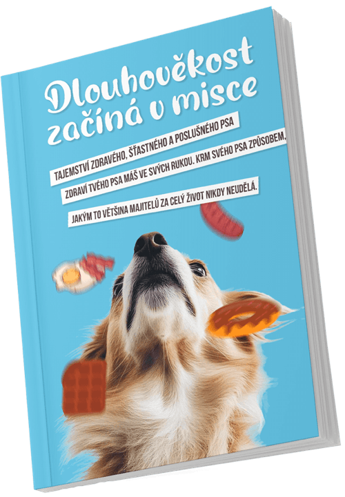
🎁 BONUS: E-kniha “Dlouhověkost začíná v misce”
Objevte, co každý den dáváte do misky svého psa — a co by tam mělo být, aby žil déle a šťastněji. Bez správné výživy je každý trénink nebo péče zbytečná. Ale jakmile budete mít výživu svého psa pod kontrolou, položíte základ pro zdravější a šťastnější život:
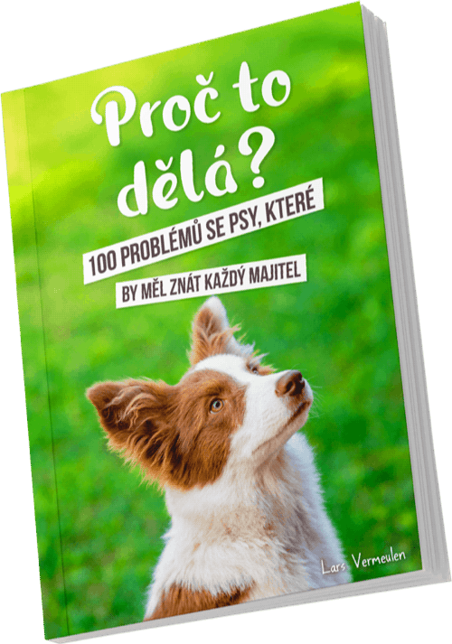
🎁 BONUS: E-kniha “Proč to dělá? — 100 problémů se psy”
Váš pes tahá na vodítku. Štěká na jiné psy. Skáče na návštěvy. A vy si říkáte: proč to sakra dělá? Tato e-kniha odhaluje 100 nejčastějších problémů se psy — a dává vám přesné řešení pro každý z nich. Konečně pochopíte, co se odehrává v hlavě vašeho psa:
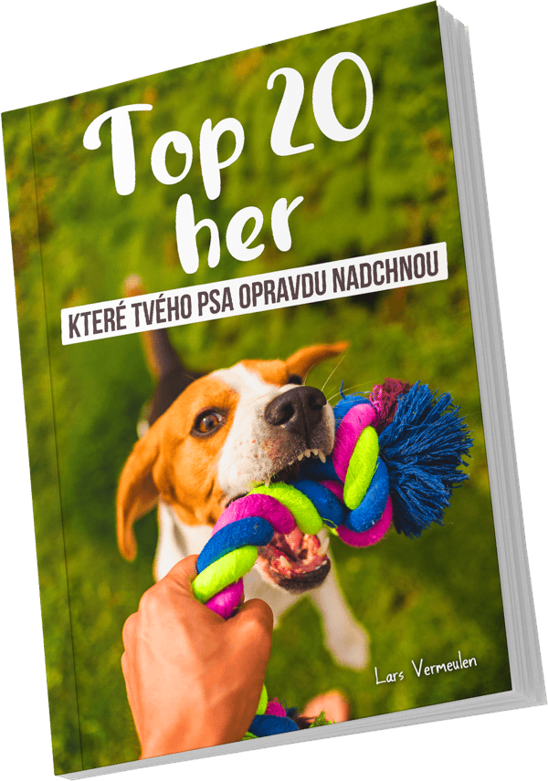
🎁 BONUS: E-kniha “Top 20 her, které vašeho psa opravdu unaví”
Unavený pes je šťastný pes. Ale nekonečné házení míčkem? To nefunguje. Váš pes potřebuje mentální výzvu — a přesně tu najdete v této e-knize. 20 osvědčených her, které vašeho psa mentálně vyčerpají, aby pak spokojeně ležel na svém pelíšku:
Možná si teď říkáte — “Proč bych měl/a utrácet peníze za tuto knihu?” 🤔📘
Odpověď je jednoduchá:
Nabízím vám rozšířenou záruku vrácení peněz. 💸 Nejste spokojeni? Dostanete zpět celou částku. Bez otázek. Bez výmluv. Bez stresu. ✅
Nemáte co ztratit — pouze šanci konečně přejít od chaosu ke klidu… a zažít, jaké to je, když si opět užíváte svého psa. 🐕💛
Na trhu jsou stovky knih o výcviku a výchově psů. Ale žádná se téhle knize ani nepřiblíží.
Proč?
Tady je pravda: Většina knih vám dává jednotlivé tipy, které zní hezky, ale v praxi nefungují. Nebo nabízejí zastaralé metody dominance, které vůbec neodpovídají modernímu, respektujícímu přístupu. Napsal jsem průvodce, který je: aktuální, založený na psí psychologii, a především: prakticky testovaný se skutečnými psy a skutečnými majiteli.
Co tuto knihu odlišuje:
Praktická použitelnost: Toto není teorie ani prázdné sliby. Najdete zde konkrétní kroky, cvičení a techniky, které můžete okamžitě použít — i když je váš pes teď ještě “štěkací stroj” nebo “tahoun”.
Založeno na psí psychologii a praktických zkušenostech: Každý pokyn v této knize je postaven na osvědčených metodách z práce se stovkami psů. Žádné domněnky. Žádná tvrdá dominance. Pouze to, co opravdu funguje — s respektem k vašemu psovi.
Zaměření na příčinu, ne na povrchní náplasti: Tato kniha vám nepomáhá jen “potlačit problém”. Ukazuje vám, jak řešit skutečnou příčinu chování — a tím změnit celou dynamiku mezi vámi a vaším psem.
Napsáno někým, kdo tomu rozumí: Autor ví, jaké to je — být sám zoufalý se svým vlastním psem. Proto vám tato kniha nemluví z “pozice experta na piedestalu”, ale jako někdo, kdo chápe, jaké to je, když už nevíte, co dělat.
Kompletní 4-pilířový systém, který jinde nenajdete: Objevte, jak procházky, domácí pravidla, mentální stimulace a výživa spolupracují, aby proměnily vašeho psa — ne jednotlivé tipy, ale ucelený systém, který přináší skutečné výsledky.
🐕✨ O tuto knihu je obrovský zájem! Objednejte si svůj výtisk, než dojdou zásoby 📦🔥
Klid s vaším psem je na cestě. Doslova.
🐕 Tento kompletní balíček knih získáte za pouhých 550 Kč — méně než jedna lekce u trenéra psů nebo protitahový postroj, který stejně nefunguje.
Ale na rozdíl od těchto věcí vám tato kniha dá celoživotní hodnotu. 📖💛
Pomůže vám najít klid se svým psem, zbavit se chaosu, který vás sráží už měsíce nebo roky, a znovu cítit, že jste dobrý páníček. 🐕❤️
Díky této malé investici získáte přístup ke kompletnímu systému, po kterém jste tak dlouho toužili — místo toho, abyste utráceli tisíce korun za kurzy, trenéry nebo zničené věci. 💸✨
❓ Otázky, na které se často ptáte 💬
Psí superživot je založen na vědecky podložené psí psychologii a mnohaletých praktických zkušenostech se stovkami psů. Mnoho čtenářů zaznamenalo skutečné zlepšení ve vztahu se svým psem. A pokud vám to nebude vyhovovat, dostanete peníze zpět — bez otázek.
Většina metod řeší jen příznaky — zastavit štěkání, předejít tahání. Tato kniha jde ke kořeni: proč váš pes dělá to, co dělá. 4-pilířový systém kombinuje procházky, domácí pravidla, mentální stimulaci a výživu do uceleného celku, který opravdu funguje.
Systém v knize Psí superživot funguje pro všechna plemena, věkové kategorie a zázemí. Ať je váš pes štěně nebo senior, ze záchranné stanice nebo čistokrevný — principy psí psychologie jsou univerzální. A s 30denní zárukou neriskujete vůbec nic.
Získáte nejen knihu (270+ stran), ale také 3 bonusové e-knihy v hodnotě 1 650 Kč, dopravu zdarma a 30denní záruku. Porovnejte to s 1 500–3 000 Kč za lekci u trenéra psů — a tato kniha vám dá celoživotní znalosti.
Dobrý trenér stojí 1 500–3 000 Kč za lekci a funguje jen dokud platíte. Tato kniha vám dá celoživotní znalosti, které může uplatnit celá rodina. Kombinujte knihu s trenérem, pokud chcete — výborně se doplňují.
Lars Vermeulen je certifikovaný terapeut chování psů s více než 10 lety praktických zkušeností. Pomohl tisícům majitelů psů a je uznávaný odbornou veřejností. Kniha je založena na osvědčených metodách z psí psychologie.
Prodáváme přímo, abychom mohli nabídnout nejlepší cenu a služby, včetně bonusových e-knih zdarma, dopravy zdarma a osobní zákaznické podpory. Přes prostředníky by cena byla vyšší a bonusy by odpadly.
Psí superživot je fyzická kniha o 270+ stranách, která vám bude doručena domů. Navíc obdržíte 3 bonusové e-knihy digitálně na váš e-mail ihned po objednání.
Odesíláme do 24 hodin po objednání. V České republice obdržíte knihu do 1–3 pracovních dnů.
Rozhodně ano. Systém je navržen pro všechny životní situace. Mnoho technik je přímo zaměřeno na procházky a chování venku, a domácí pravidla fungují v každém typu bydlení.
Ano. Kniha je napsána tak, aby systém mohl uplatňovat i jeden člověk. Samozřejmě to funguje ještě lépe, když se zapojí celá rodina, ale není to nutné.
Ano, 100%. Vraťte knihu do 30 dnů a dostanete zpět celou částku. Bez otázek, bez výmluv, bez háčků.
Rozhodně ne. Psí superživot je kompletně založen na pozitivních, vědecky podložených metodách. Žádná dominance, žádné tvrdé tresty — pouze respekt, porozumění a spolupráce s vaším psem.
Ano. Všechny platby probíhají přes zabezpečená spojení se známými platebními metodami (Comgate, Visa, Mastercard). Naše společnost Performance Marketing Solution s.r.o. je řádně registrována (IČO: 06259928).
🇨🇿 Čtenáři z celé České republiky
sdílejí své zkušenosti.
Skutečné reakce, skutečné výsledky 💬
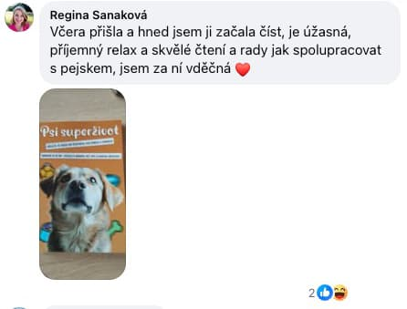
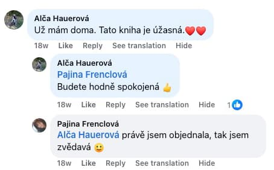
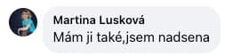
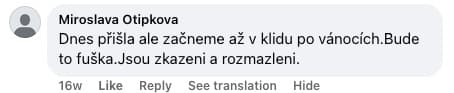
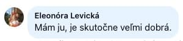
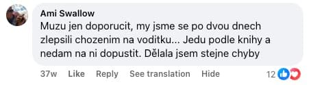
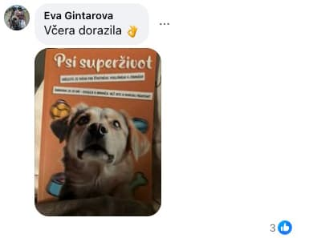
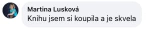
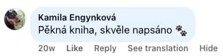
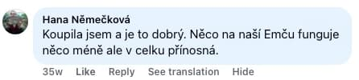
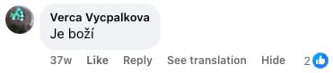
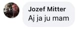
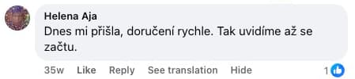
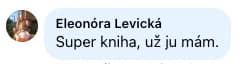
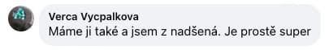
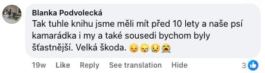
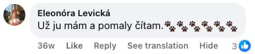
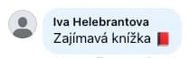